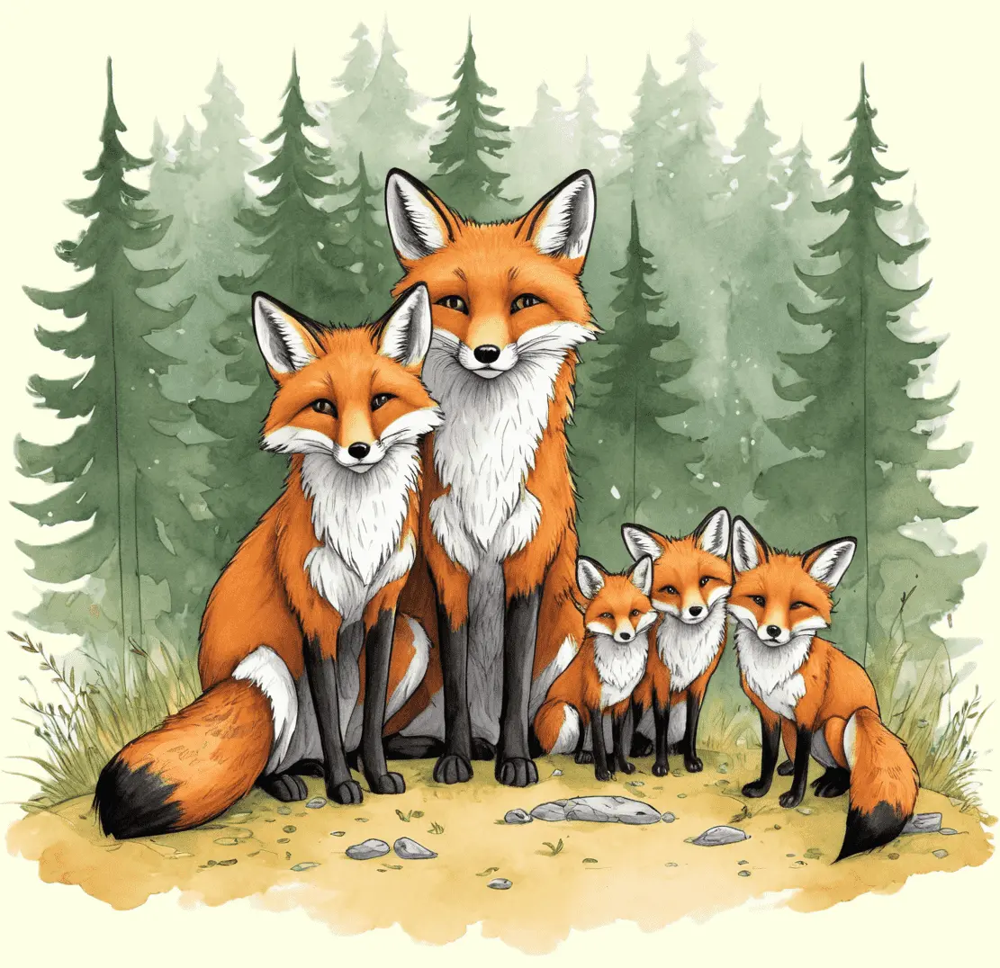

Der Rotfuchs, ein schlauer Waldbewohner, beeindruckt mit seinem roten Fell und seiner Anpassungsfähigkeit an verschiedene Lebensräume.
Erkunde die aufregende Welt dieses geschickten Jägers und erfahre, wie er in Wäldern und offenen Landschaften lebt.

Anpassungskünstler der Natur
Der Rotfuchs ist ein geschickter Jäger und Anpassungskünstler. Mit seinem charakteristischen roten Fell, den weißen Flecken und dem buschigen Schwanz ist er in vielen Teilen Europas zu Hause. Der Rotfuchs lebt in verschiedenen Lebensräumen, von Wäldern über Wiesen bis hin zu städtischen Gebieten, und passt sich gut an unterschiedliche Umgebungen an. Seine nachtaktive Lebensweise ermöglicht es ihm, in der Dämmerung und bei Nacht auf Nahrungssuche zu gehen. Er ernährt sich von einer breiten Palette an Nahrung, darunter kleine Säugetiere, Vögel, Insekten, Früchte und Abfälle.
Rotfüchse sind nicht nur geschickte Jäger, sondern auch kluge Tiere. Sie nutzen ihre scharfen Sinne, insbesondere den ausgezeichneten Gehör- und Geruchssinn, um Beute aufzuspüren und Gefahren frühzeitig zu erkennen. Der Rotfuchs ist bekannt für sein listiges Verhalten und seine Fähigkeit, sich an verschiedene Umweltbedingungen anzupassen. Sein Lebensstil und seine Anpassungsfähigkeit machen ihn zu einem faszinierenden Vertreter der wilden Fauna.
Gesellige Familienwesen
Die Kommunikation unter den Rotfüchsen erfolgt durch verschiedene Laute, darunter Bellen, Kläffen und Winseln. Diese Lautäußerungen dienen der Verständigung innerhalb der Familie sowie der Kommunikation mit anderen Rotfüchsen in der Umgebung. Das soziale Leben und die liebevolle Pflege der Jungen prägen das Familienleben der Rotfüchse. Insgesamt sind Rotfüchse faszinierende Tiere, die durch ihre Anpassungsfähigkeit und ihr soziales Verhalten in der Natur beeindrucken.